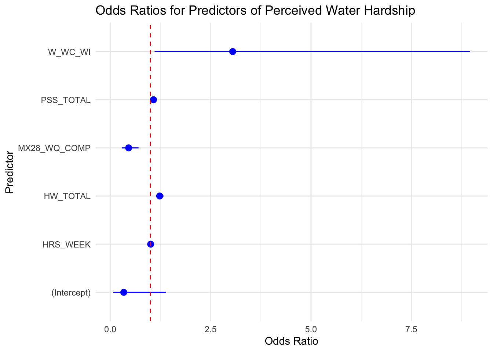
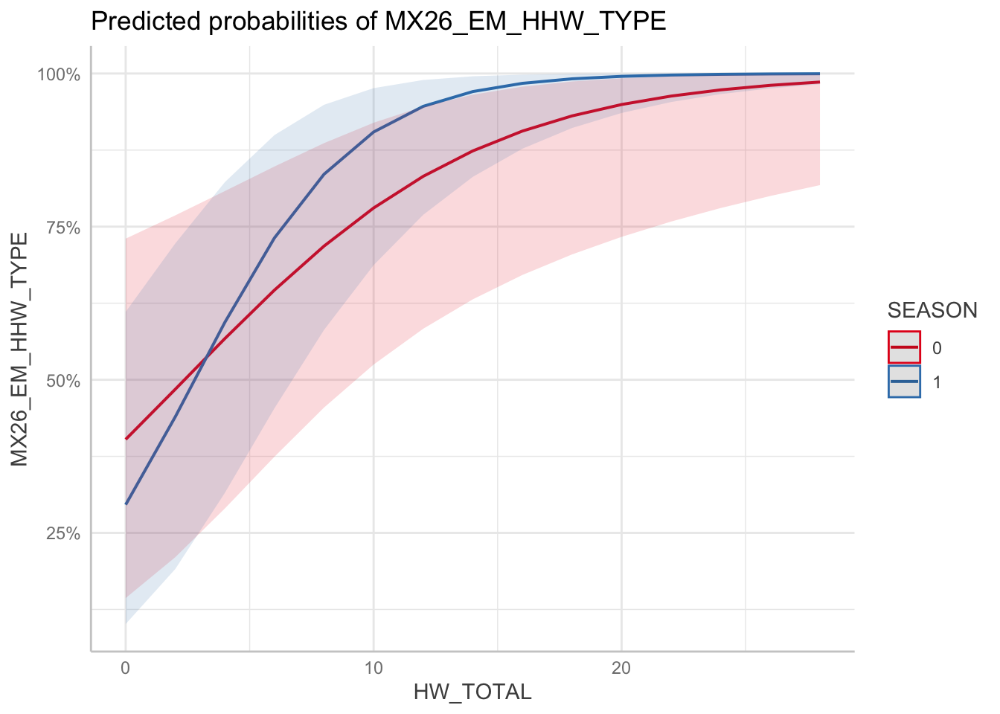
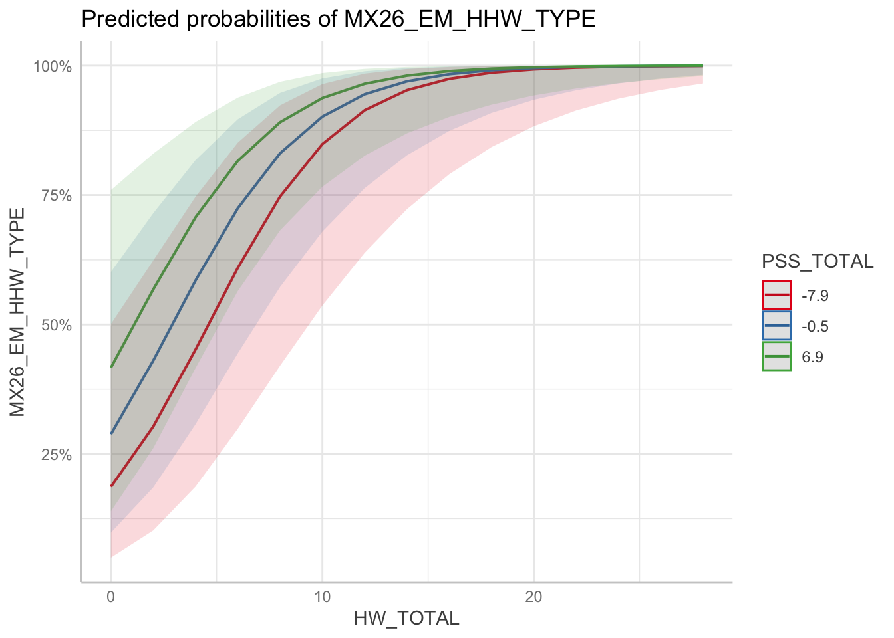

HBA plots
2025-03-08
Last updated: 2025-07-17
Checks: 6 1
Knit directory: QUAIL-Mex/
This reproducible R Markdown analysis was created with workflowr (version 1.7.1). The Checks tab describes the reproducibility checks that were applied when the results were created. The Past versions tab lists the development history.
The R Markdown is untracked by Git. To know which version of the R
Markdown file created these results, you’ll want to first commit it to
the Git repo. If you’re still working on the analysis, you can ignore
this warning. When you’re finished, you can run
wflow_publish to commit the R Markdown file and build the
HTML.
Great job! The global environment was empty. Objects defined in the global environment can affect the analysis in your R Markdown file in unknown ways. For reproduciblity it’s best to always run the code in an empty environment.
The command set.seed(20241009) was run prior to running
the code in the R Markdown file. Setting a seed ensures that any results
that rely on randomness, e.g. subsampling or permutations, are
reproducible.
Great job! Recording the operating system, R version, and package versions is critical for reproducibility.
Nice! There were no cached chunks for this analysis, so you can be confident that you successfully produced the results during this run.
Great job! Using relative paths to the files within your workflowr project makes it easier to run your code on other machines.
Great! You are using Git for version control. Tracking code development and connecting the code version to the results is critical for reproducibility.
The results in this page were generated with repository version a8bf971. See the Past versions tab to see a history of the changes made to the R Markdown and HTML files.
Note that you need to be careful to ensure that all relevant files for
the analysis have been committed to Git prior to generating the results
(you can use wflow_publish or
wflow_git_commit). workflowr only checks the R Markdown
file, but you know if there are other scripts or data files that it
depends on. Below is the status of the Git repository when the results
were generated:
Ignored files:
Ignored: .DS_Store
Ignored: .RData
Ignored: .Rhistory
Ignored: .Rproj.user/
Ignored: analysis/.DS_Store
Ignored: analysis/.RData
Ignored: analysis/.Rhistory
Ignored: analysis/HLTH_counts_by_SES.png
Ignored: analysis/Hrs_by_HWISE score.png
Ignored: analysis/odds_ratio_plot.png
Ignored: analysis/stacked_barplot.png
Ignored: code/.DS_Store
Ignored: data/.DS_Store
Untracked files:
Untracked: analysis/HBA2025_emotions.Rmd
Unstaged changes:
Deleted: analysis/tests.Rmd
Note that any generated files, e.g. HTML, png, CSS, etc., are not included in this status report because it is ok for generated content to have uncommitted changes.
There are no past versions. Publish this analysis with
wflow_publish() to start tracking its development.
#Categorical groups using HWISE
# Categorize HW_TOTAL into four groups
data <- data %>%
filter(!is.na(HRS_WEEK), !is.na(HW_TOTAL)) %>%
mutate(HW_TOTAL_category = case_when(
HW_TOTAL >= 0 & HW_TOTAL <= 2 ~ "No-to-Marginal",
HW_TOTAL >= 3 & HW_TOTAL <= 11 ~ "Low",
HW_TOTAL >= 12 & HW_TOTAL <= 23 ~ "Moderate",
HW_TOTAL >= 24 & HW_TOTAL <= 36 ~ "High"
))Significant differences in hours of water supply per week
Number of samples falling in each category:
No-to-Marginal Low Moderate High
72 184 93 5 Check normality using Shapiro-Wilk test for each group:# A tibble: 4 × 2
HW_TOTAL_category p_value
<fct> <dbl>
1 No-to-Marginal 1.92e-11
2 Low 2.31e-16
3 Moderate 4.29e-11
4 High 2.07e- 1Results Kruskal-Wallis test:
Kruskal-Wallis rank sum test
data: HRS_WEEK by HW_TOTAL_category
Kruskal-Wallis chi-squared = 31.694, df = 3, p-value = 6.07e-07Results Wilcoxon pairwise comparisons# A tibble: 6 × 9
.y. group1 group2 n1 n2 statistic p p.adj p.adj.signif
<chr> <chr> <chr> <int> <int> <dbl> <dbl> <dbl> <chr>
1 HRS_WEEK No-to-Marg… Low 72 184 8478 2.67e-4 2 e-3 **
2 HRS_WEEK No-to-Marg… Moder… 72 93 4855 3.34e-7 2 e-6 ***
3 HRS_WEEK No-to-Marg… High 72 5 326. 8.04e-4 5 e-3 **
4 HRS_WEEK Low Moder… 184 93 9847 3.7 e-2 2.23e-1 ns
5 HRS_WEEK Low High 184 5 756 1.2 e-2 7.2 e-2 ns
6 HRS_WEEK Moderate High 93 5 369 2.7 e-2 1.64e-1 ns Interpretation:
p.adj < 0.001 ~ "***",
p.adj < 0.01 ~ "**",
p.adj < 0.05 ~ "*",
TRUE ~ "ns"Printing significant results only:# A tibble: 3 × 14
.y. group1 group2 n1 n2 statistic p p.adj p.adj.signif
<chr> <chr> <chr> <int> <int> <dbl> <dbl> <dbl> <chr>
1 HRS_WEEK No-to-Margin… Low 72 184 8478 2.67e-4 2e-3 **
2 HRS_WEEK No-to-Margin… Moder… 72 93 4855 3.34e-7 2e-6 ***
3 HRS_WEEK No-to-Margin… High 72 5 326. 8.04e-4 5e-3 **
# ℹ 5 more variables: y.position <dbl>, groups <named list>, xmin <dbl>,
# xmax <dbl>, label <chr>Warning: The `fun.y` argument of `stat_summary()` is deprecated as of ggplot2 3.3.0.
ℹ Please use the `fun` argument instead.
This warning is displayed once every 8 hours.
Call `lifecycle::last_lifecycle_warnings()` to see where this warning was
generated.
# Ensure it's properly coded as 0 or 1
data$MX26_EM_HHW_TYPE <- as.numeric(as.factor(data$MX26_EM_HHW_TYPE)) - 1
# Remove rows where MX26_EM_HHW_TYPE is 2
data <- data %>% filter(MX26_EM_HHW_TYPE != 2)
# Check unique values to confirm only 0 and 1 remain
table(data$MX26_EM_HHW_TYPE)
0 1
114 230 dim(data)[1] 344 48# Define dependent (outcome) variable
outcome_var <- "MX26_EM_HHW_TYPE" # Binary outcome (0 = negative, 1 = positive)
# Define independent (predictor) variables
predictors <- c("HRS_WEEK", "W_WC_WI", "MX28_WQ_COMP", "W_WS_LOC",
"SES_SC_Total", "HW_TOTAL", "D_HH_SIZE", "D_LOC_TIME",
"PSS_TOTAL", "HLTH_CPAIN_CAT", "HLTH_CDIS_CAT",
"MX9_DRINK_W", "MX10_WSTORAGE", "SEASON")
# Run univariate logistic regression for each predictor
univariate_results <- list()
aic_values <- data.frame(Predictor = character(), AIC = numeric(), stringsAsFactors = FALSE)
data <- data %>% drop_na(predictors)Warning: Using an external vector in selections was deprecated in tidyselect 1.1.0.
ℹ Please use `all_of()` or `any_of()` instead.
# Was:
data %>% select(predictors)
# Now:
data %>% select(all_of(predictors))
See <https://tidyselect.r-lib.org/reference/faq-external-vector.html>.
This warning is displayed once every 8 hours.
Call `lifecycle::last_lifecycle_warnings()` to see where this warning was
generated.dim(data)[1] 251 48for (var in predictors) {
# Build formula dynamically
formula <- as.formula(paste(outcome_var, "~", var))
# Fit univariate logistic regression model
model <- glm(formula, data = data, family = binomial)
# Store model summary
univariate_results[[var]] <- summary(model)
# Store AIC values
aic_values <- rbind(aic_values, data.frame(Predictor = var, AIC = AIC(model)))
}
univariate_results$HRS_WEEK
Call:
glm(formula = formula, family = binomial, data = data)
Coefficients:
Estimate Std. Error z value Pr(>|z|)
(Intercept) 1.376987 0.237924 5.788 7.14e-09 ***
HRS_WEEK -0.006911 0.001979 -3.493 0.000478 ***
---
Signif. codes: 0 '***' 0.001 '**' 0.01 '*' 0.05 '.' 0.1 ' ' 1
(Dispersion parameter for binomial family taken to be 1)
Null deviance: 315.71 on 250 degrees of freedom
Residual deviance: 303.13 on 249 degrees of freedom
AIC: 307.13
Number of Fisher Scoring iterations: 4
$W_WC_WI
Call:
glm(formula = formula, family = binomial, data = data)
Coefficients:
Estimate Std. Error z value Pr(>|z|)
(Intercept) -0.04763 0.21828 -0.218 0.827
W_WC_WI 1.26985 0.28586 4.442 8.9e-06 ***
---
Signif. codes: 0 '***' 0.001 '**' 0.01 '*' 0.05 '.' 0.1 ' ' 1
(Dispersion parameter for binomial family taken to be 1)
Null deviance: 315.71 on 250 degrees of freedom
Residual deviance: 295.52 on 249 degrees of freedom
AIC: 299.52
Number of Fisher Scoring iterations: 4
$MX28_WQ_COMP
Call:
glm(formula = formula, family = binomial, data = data)
Coefficients:
Estimate Std. Error z value Pr(>|z|)
(Intercept) 1.3442 0.2323 5.786 7.19e-09 ***
MX28_WQ_COMP -0.6114 0.1777 -3.440 0.000582 ***
---
Signif. codes: 0 '***' 0.001 '**' 0.01 '*' 0.05 '.' 0.1 ' ' 1
(Dispersion parameter for binomial family taken to be 1)
Null deviance: 315.71 on 250 degrees of freedom
Residual deviance: 303.36 on 249 degrees of freedom
AIC: 307.36
Number of Fisher Scoring iterations: 4
$W_WS_LOC
Call:
glm(formula = formula, family = binomial, data = data)
Coefficients:
Estimate Std. Error z value Pr(>|z|)
(Intercept) 0.4463 0.1848 2.414 0.0158 *
W_WS_LOC 0.6111 0.2739 2.231 0.0257 *
---
Signif. codes: 0 '***' 0.001 '**' 0.01 '*' 0.05 '.' 0.1 ' ' 1
(Dispersion parameter for binomial family taken to be 1)
Null deviance: 315.71 on 250 degrees of freedom
Residual deviance: 310.65 on 249 degrees of freedom
AIC: 314.65
Number of Fisher Scoring iterations: 4
$SES_SC_Total
Call:
glm(formula = formula, family = binomial, data = data)
Coefficients:
Estimate Std. Error z value Pr(>|z|)
(Intercept) 1.240625 0.416560 2.978 0.0029 **
SES_SC_Total -0.003745 0.002925 -1.280 0.2005
---
Signif. codes: 0 '***' 0.001 '**' 0.01 '*' 0.05 '.' 0.1 ' ' 1
(Dispersion parameter for binomial family taken to be 1)
Null deviance: 315.71 on 250 degrees of freedom
Residual deviance: 314.06 on 249 degrees of freedom
AIC: 318.06
Number of Fisher Scoring iterations: 4
$HW_TOTAL
Call:
glm(formula = formula, family = binomial, data = data)
Coefficients:
Estimate Std. Error z value Pr(>|z|)
(Intercept) -0.80034 0.25605 -3.126 0.00177 **
HW_TOTAL 0.21313 0.03389 6.288 3.21e-10 ***
---
Signif. codes: 0 '***' 0.001 '**' 0.01 '*' 0.05 '.' 0.1 ' ' 1
(Dispersion parameter for binomial family taken to be 1)
Null deviance: 315.71 on 250 degrees of freedom
Residual deviance: 257.93 on 249 degrees of freedom
AIC: 261.93
Number of Fisher Scoring iterations: 5
$D_HH_SIZE
Call:
glm(formula = formula, family = binomial, data = data)
Coefficients:
Estimate Std. Error z value Pr(>|z|)
(Intercept) 0.59431 0.25613 2.320 0.0203 *
D_HH_SIZE 0.02741 0.04112 0.667 0.5050
---
Signif. codes: 0 '***' 0.001 '**' 0.01 '*' 0.05 '.' 0.1 ' ' 1
(Dispersion parameter for binomial family taken to be 1)
Null deviance: 315.71 on 250 degrees of freedom
Residual deviance: 315.22 on 249 degrees of freedom
AIC: 319.22
Number of Fisher Scoring iterations: 4
$D_LOC_TIME
Call:
glm(formula = formula, family = binomial, data = data)
Coefficients:
Estimate Std. Error z value Pr(>|z|)
(Intercept) 0.875994 0.300219 2.918 0.00352 **
D_LOC_TIME -0.006001 0.011876 -0.505 0.61337
---
Signif. codes: 0 '***' 0.001 '**' 0.01 '*' 0.05 '.' 0.1 ' ' 1
(Dispersion parameter for binomial family taken to be 1)
Null deviance: 315.71 on 250 degrees of freedom
Residual deviance: 315.45 on 249 degrees of freedom
AIC: 319.45
Number of Fisher Scoring iterations: 4
$PSS_TOTAL
Call:
glm(formula = formula, family = binomial, data = data)
Coefficients:
Estimate Std. Error z value Pr(>|z|)
(Intercept) 0.82030 0.14281 5.744 9.24e-09 ***
PSS_TOTAL 0.06842 0.01975 3.464 0.000532 ***
---
Signif. codes: 0 '***' 0.001 '**' 0.01 '*' 0.05 '.' 0.1 ' ' 1
(Dispersion parameter for binomial family taken to be 1)
Null deviance: 315.71 on 250 degrees of freedom
Residual deviance: 302.82 on 249 degrees of freedom
AIC: 306.82
Number of Fisher Scoring iterations: 4
$HLTH_CPAIN_CAT
Call:
glm(formula = formula, family = binomial, data = data)
Coefficients:
Estimate Std. Error z value Pr(>|z|)
(Intercept) 0.6306 0.1524 4.139 3.49e-05 ***
HLTH_CPAIN_CAT 0.4900 0.3341 1.467 0.143
---
Signif. codes: 0 '***' 0.001 '**' 0.01 '*' 0.05 '.' 0.1 ' ' 1
(Dispersion parameter for binomial family taken to be 1)
Null deviance: 315.71 on 250 degrees of freedom
Residual deviance: 313.45 on 249 degrees of freedom
AIC: 317.45
Number of Fisher Scoring iterations: 4
$HLTH_CDIS_CAT
Call:
glm(formula = formula, family = binomial, data = data)
Coefficients:
Estimate Std. Error z value Pr(>|z|)
(Intercept) 0.7631 0.1458 5.235 1.65e-07 ***
HLTH_CDIS_CAT -0.1570 0.3873 -0.405 0.685
---
Signif. codes: 0 '***' 0.001 '**' 0.01 '*' 0.05 '.' 0.1 ' ' 1
(Dispersion parameter for binomial family taken to be 1)
Null deviance: 315.71 on 250 degrees of freedom
Residual deviance: 315.54 on 249 degrees of freedom
AIC: 319.54
Number of Fisher Scoring iterations: 4
$MX9_DRINK_W
Call:
glm(formula = formula, family = binomial, data = data)
Coefficients:
Estimate
(Intercept) -4.979e-15
MX9_DRINK_Wa) agua del suministro publico,E) Garrafon de purificadora,G) Botellas de Agua 1.032e-14
MX9_DRINK_Wd) Garrafon de marca -6.931e-01
MX9_DRINK_WD) Garrafon de marca -4.055e-01
MX9_DRINK_Wd) Garrafon de marca,E) Garrafon de purificadora -1.557e+01
MX9_DRINK_WD) Garrafon de marca,E) Garrafon de purificadora 1.792e+00
MX9_DRINK_Wd) Garrafon de marca,E) Garrafon de purificadora,G) Botellas de Agua 5.674e-15
MX9_DRINK_WD) Garrafon de marca,E) Garrafon de purificadora,G) Botellas de Agua 1.609e+00
MX9_DRINK_WD) Garrafon de marca,G) Botellas de Agua 1.557e+01
MX9_DRINK_WE) Garrafon de purificadora 8.157e-01
MX9_DRINK_WE) Garrafon de purificadora,G) Botellas de Agua 7.397e-01
MX9_DRINK_WG) Botellas de Agua -6.931e-01
Std. Error
(Intercept) 1.000e+00
MX9_DRINK_Wa) agua del suministro publico,E) Garrafon de purificadora,G) Botellas de Agua 1.732e+00
MX9_DRINK_Wd) Garrafon de marca 1.581e+00
MX9_DRINK_WD) Garrafon de marca 1.354e+00
MX9_DRINK_Wd) Garrafon de marca,E) Garrafon de purificadora 1.455e+03
MX9_DRINK_WD) Garrafon de marca,E) Garrafon de purificadora 1.472e+00
MX9_DRINK_Wd) Garrafon de marca,E) Garrafon de purificadora,G) Botellas de Agua 1.732e+00
MX9_DRINK_WD) Garrafon de marca,E) Garrafon de purificadora,G) Botellas de Agua 1.483e+00
MX9_DRINK_WD) Garrafon de marca,G) Botellas de Agua 8.403e+02
MX9_DRINK_WE) Garrafon de purificadora 1.016e+00
MX9_DRINK_WE) Garrafon de purificadora,G) Botellas de Agua 1.035e+00
MX9_DRINK_WG) Botellas de Agua 1.581e+00
z value
(Intercept) 0.000
MX9_DRINK_Wa) agua del suministro publico,E) Garrafon de purificadora,G) Botellas de Agua 0.000
MX9_DRINK_Wd) Garrafon de marca -0.438
MX9_DRINK_WD) Garrafon de marca -0.299
MX9_DRINK_Wd) Garrafon de marca,E) Garrafon de purificadora -0.011
MX9_DRINK_WD) Garrafon de marca,E) Garrafon de purificadora 1.217
MX9_DRINK_Wd) Garrafon de marca,E) Garrafon de purificadora,G) Botellas de Agua 0.000
MX9_DRINK_WD) Garrafon de marca,E) Garrafon de purificadora,G) Botellas de Agua 1.085
MX9_DRINK_WD) Garrafon de marca,G) Botellas de Agua 0.019
MX9_DRINK_WE) Garrafon de purificadora 0.803
MX9_DRINK_WE) Garrafon de purificadora,G) Botellas de Agua 0.715
MX9_DRINK_WG) Botellas de Agua -0.438
Pr(>|z|)
(Intercept) 1.000
MX9_DRINK_Wa) agua del suministro publico,E) Garrafon de purificadora,G) Botellas de Agua 1.000
MX9_DRINK_Wd) Garrafon de marca 0.661
MX9_DRINK_WD) Garrafon de marca 0.765
MX9_DRINK_Wd) Garrafon de marca,E) Garrafon de purificadora 0.991
MX9_DRINK_WD) Garrafon de marca,E) Garrafon de purificadora 0.224
MX9_DRINK_Wd) Garrafon de marca,E) Garrafon de purificadora,G) Botellas de Agua 1.000
MX9_DRINK_WD) Garrafon de marca,E) Garrafon de purificadora,G) Botellas de Agua 0.278
MX9_DRINK_WD) Garrafon de marca,G) Botellas de Agua 0.985
MX9_DRINK_WE) Garrafon de purificadora 0.422
MX9_DRINK_WE) Garrafon de purificadora,G) Botellas de Agua 0.475
MX9_DRINK_WG) Botellas de Agua 0.661
(Dispersion parameter for binomial family taken to be 1)
Null deviance: 315.71 on 250 degrees of freedom
Residual deviance: 303.32 on 239 degrees of freedom
AIC: 327.32
Number of Fisher Scoring iterations: 14
$MX10_WSTORAGE
Call:
glm(formula = formula, family = binomial, data = data)
Coefficients:
Estimate
(Intercept) -0.4055
MX10_WSTORAGEA) No se almacena,E) Cubeta con tapa 18.9715
MX10_WSTORAGEB) Tinaco 0.4055
MX10_WSTORAGEB) Tinaco,agua de lluvia: reducir consumo--> lavar patio,gastos,llavar bano 18.9715
MX10_WSTORAGEB) Tinaco,C) Cisterna 0.6817
MX10_WSTORAGEB) Tinaco,C) Cisterna,D) Tambo 2.0794
MX10_WSTORAGEB) Tinaco,C) Cisterna,D) Tambo,E) Cubeta con tapa 18.9715
MX10_WSTORAGEB) Tinaco,C) Cisterna,D) Tambo,F) Cubeta sin tapa 1.7918
MX10_WSTORAGEB) Tinaco,C) Cisterna,E) Cubeta con tapa 18.9715
MX10_WSTORAGEB) Tinaco,C) Cisterna,E) Cubeta con tapa,F) Cubeta sin tapa,pileta 18.9715
MX10_WSTORAGEB) Tinaco,C) Cisterna,F) Cubeta sin tapa 1.3863
MX10_WSTORAGEB) Tinaco,C) Cisterna,F) Cubeta sin tapa,pileta -18.1606
MX10_WSTORAGEB) Tinaco,C) Cisterna,pileta 18.9715
MX10_WSTORAGEB) Tinaco,C) Cisterna,pileta -18.1606
MX10_WSTORAGEB) Tinaco,cubeta con bolsa -18.1606
MX10_WSTORAGEB) Tinaco,D) Tambo 1.0341
MX10_WSTORAGEB) Tinaco,D) Tambo,Botes tina 18.9715
MX10_WSTORAGEB) Tinaco,D) Tambo,E) Cubeta con tapa 2.1972
MX10_WSTORAGEB) Tinaco,D) Tambo,E) Cubeta con tapa,F) Cubeta sin tapa 18.9715
MX10_WSTORAGEB) Tinaco,D) Tambo,F) Cubeta sin tapa 0.5596
MX10_WSTORAGEB) Tinaco,D) Tambo,pileta 18.9715
MX10_WSTORAGEB) Tinaco,E) Cubeta con tapa 18.9715
MX10_WSTORAGEB) Tinaco,E) Cubeta con tapa,F) Cubeta sin tapa 18.9715
MX10_WSTORAGEB) Tinaco,E) Cubeta con tapa,G) Otro,Pileta -18.1606
MX10_WSTORAGEB) Tinaco,E) Cubeta con tapa,Pileta 18.9715
MX10_WSTORAGEB) Tinaco,F) Cubeta sin tapa 0.4055
MX10_WSTORAGEB) Tinaco,pileta 18.9715
MX10_WSTORAGEB) Tinaco,Pileta -18.1606
MX10_WSTORAGEB) Tinaco,Pileta 18.9715
MX10_WSTORAGEC) Cisterna 0.6931
MX10_WSTORAGEC) Cisterna,D) Tambo 1.5041
MX10_WSTORAGEC) Cisterna,D) Tambo,E) Cubeta con tapa 18.9715
MX10_WSTORAGEC) Cisterna,D) Tambo,E) Cubeta con tapa,G) Otro 18.9715
MX10_WSTORAGEC) Cisterna,D) Tambo,F) Cubeta sin tapa 18.9715
MX10_WSTORAGEC) Cisterna,E) Cubeta con tapa 18.9715
MX10_WSTORAGEC) Cisterna,F) Cubeta sin tapa 1.5041
MX10_WSTORAGEC) Cisterna,pileta -18.1606
MX10_WSTORAGEC) Cisterna,tina botes 18.9715
MX10_WSTORAGED) Tambo 1.7918
MX10_WSTORAGED) Tambo,botes 4 con tapa 18.9715
MX10_WSTORAGED) Tambo,E) Cubeta con tapa 1.7918
MX10_WSTORAGED) Tambo,E) Cubeta con tapa,F) Cubeta sin tapa 18.9715
MX10_WSTORAGED) Tambo,F) Cubeta sin tapa 0.9651
MX10_WSTORAGED) Tambo,F) Cubeta sin tapa,Pileta 18.9715
MX10_WSTORAGED) Tambo,G) Otro 18.9715
MX10_WSTORAGED) Tambo,pileta,botes 18.9715
MX10_WSTORAGEE) Cubeta con tapa 18.9715
MX10_WSTORAGEF) Cubeta sin tapa 18.9715
MX10_WSTORAGEF) Cubeta sin tapa,Pileta 18.9715
MX10_WSTORAGEpileta 18.9715
MX10_WSTORAGEpileta 0.4055
Std. Error
(Intercept) 0.9129
MX10_WSTORAGEA) No se almacena,E) Cubeta con tapa 6522.6387
MX10_WSTORAGEB) Tinaco 0.9936
MX10_WSTORAGEB) Tinaco,agua de lluvia: reducir consumo--> lavar patio,gastos,llavar bano 6522.6387
MX10_WSTORAGEB) Tinaco,C) Cisterna 0.9557
MX10_WSTORAGEB) Tinaco,C) Cisterna,D) Tambo 1.1087
MX10_WSTORAGEB) Tinaco,C) Cisterna,D) Tambo,E) Cubeta con tapa 3261.3194
MX10_WSTORAGEB) Tinaco,C) Cisterna,D) Tambo,F) Cubeta sin tapa 1.4434
MX10_WSTORAGEB) Tinaco,C) Cisterna,E) Cubeta con tapa 3765.8473
MX10_WSTORAGEB) Tinaco,C) Cisterna,E) Cubeta con tapa,F) Cubeta sin tapa,pileta 4612.2021
MX10_WSTORAGEB) Tinaco,C) Cisterna,F) Cubeta sin tapa 1.1365
MX10_WSTORAGEB) Tinaco,C) Cisterna,F) Cubeta sin tapa,pileta 6522.6387
MX10_WSTORAGEB) Tinaco,C) Cisterna,pileta 6522.6387
MX10_WSTORAGEB) Tinaco,C) Cisterna,pileta 6522.6387
MX10_WSTORAGEB) Tinaco,cubeta con bolsa 6522.6387
MX10_WSTORAGEB) Tinaco,D) Tambo 1.0124
MX10_WSTORAGEB) Tinaco,D) Tambo,Botes tina 6522.6387
MX10_WSTORAGEB) Tinaco,D) Tambo,E) Cubeta con tapa 1.4142
MX10_WSTORAGEB) Tinaco,D) Tambo,E) Cubeta con tapa,F) Cubeta sin tapa 6522.6387
MX10_WSTORAGEB) Tinaco,D) Tambo,F) Cubeta sin tapa 1.0690
MX10_WSTORAGEB) Tinaco,D) Tambo,pileta 6522.6387
MX10_WSTORAGEB) Tinaco,E) Cubeta con tapa 6522.6387
MX10_WSTORAGEB) Tinaco,E) Cubeta con tapa,F) Cubeta sin tapa 6522.6387
MX10_WSTORAGEB) Tinaco,E) Cubeta con tapa,G) Otro,Pileta 6522.6387
MX10_WSTORAGEB) Tinaco,E) Cubeta con tapa,Pileta 6522.6387
MX10_WSTORAGEB) Tinaco,F) Cubeta sin tapa 1.3540
MX10_WSTORAGEB) Tinaco,pileta 6522.6387
MX10_WSTORAGEB) Tinaco,Pileta 6522.6387
MX10_WSTORAGEB) Tinaco,Pileta 6522.6387
MX10_WSTORAGEC) Cisterna 1.1902
MX10_WSTORAGEC) Cisterna,D) Tambo 1.2247
MX10_WSTORAGEC) Cisterna,D) Tambo,E) Cubeta con tapa 4612.2021
MX10_WSTORAGEC) Cisterna,D) Tambo,E) Cubeta con tapa,G) Otro 6522.6387
MX10_WSTORAGEC) Cisterna,D) Tambo,F) Cubeta sin tapa 6522.6387
MX10_WSTORAGEC) Cisterna,E) Cubeta con tapa 6522.6387
MX10_WSTORAGEC) Cisterna,F) Cubeta sin tapa 1.4720
MX10_WSTORAGEC) Cisterna,pileta 6522.6387
MX10_WSTORAGEC) Cisterna,tina botes 6522.6387
MX10_WSTORAGED) Tambo 1.4434
MX10_WSTORAGED) Tambo,botes 4 con tapa 6522.6387
MX10_WSTORAGED) Tambo,E) Cubeta con tapa 1.4434
MX10_WSTORAGED) Tambo,E) Cubeta con tapa,F) Cubeta sin tapa 4612.2021
MX10_WSTORAGED) Tambo,F) Cubeta sin tapa 1.1073
MX10_WSTORAGED) Tambo,F) Cubeta sin tapa,Pileta 6522.6387
MX10_WSTORAGED) Tambo,G) Otro 6522.6387
MX10_WSTORAGED) Tambo,pileta,botes 6522.6387
MX10_WSTORAGEE) Cubeta con tapa 4612.2021
MX10_WSTORAGEF) Cubeta sin tapa 3765.8473
MX10_WSTORAGEF) Cubeta sin tapa,Pileta 6522.6387
MX10_WSTORAGEpileta 6522.6387
MX10_WSTORAGEpileta 1.6833
z value
(Intercept) -0.444
MX10_WSTORAGEA) No se almacena,E) Cubeta con tapa 0.003
MX10_WSTORAGEB) Tinaco 0.408
MX10_WSTORAGEB) Tinaco,agua de lluvia: reducir consumo--> lavar patio,gastos,llavar bano 0.003
MX10_WSTORAGEB) Tinaco,C) Cisterna 0.713
MX10_WSTORAGEB) Tinaco,C) Cisterna,D) Tambo 1.876
MX10_WSTORAGEB) Tinaco,C) Cisterna,D) Tambo,E) Cubeta con tapa 0.006
MX10_WSTORAGEB) Tinaco,C) Cisterna,D) Tambo,F) Cubeta sin tapa 1.241
MX10_WSTORAGEB) Tinaco,C) Cisterna,E) Cubeta con tapa 0.005
MX10_WSTORAGEB) Tinaco,C) Cisterna,E) Cubeta con tapa,F) Cubeta sin tapa,pileta 0.004
MX10_WSTORAGEB) Tinaco,C) Cisterna,F) Cubeta sin tapa 1.220
MX10_WSTORAGEB) Tinaco,C) Cisterna,F) Cubeta sin tapa,pileta -0.003
MX10_WSTORAGEB) Tinaco,C) Cisterna,pileta 0.003
MX10_WSTORAGEB) Tinaco,C) Cisterna,pileta -0.003
MX10_WSTORAGEB) Tinaco,cubeta con bolsa -0.003
MX10_WSTORAGEB) Tinaco,D) Tambo 1.021
MX10_WSTORAGEB) Tinaco,D) Tambo,Botes tina 0.003
MX10_WSTORAGEB) Tinaco,D) Tambo,E) Cubeta con tapa 1.554
MX10_WSTORAGEB) Tinaco,D) Tambo,E) Cubeta con tapa,F) Cubeta sin tapa 0.003
MX10_WSTORAGEB) Tinaco,D) Tambo,F) Cubeta sin tapa 0.523
MX10_WSTORAGEB) Tinaco,D) Tambo,pileta 0.003
MX10_WSTORAGEB) Tinaco,E) Cubeta con tapa 0.003
MX10_WSTORAGEB) Tinaco,E) Cubeta con tapa,F) Cubeta sin tapa 0.003
MX10_WSTORAGEB) Tinaco,E) Cubeta con tapa,G) Otro,Pileta -0.003
MX10_WSTORAGEB) Tinaco,E) Cubeta con tapa,Pileta 0.003
MX10_WSTORAGEB) Tinaco,F) Cubeta sin tapa 0.299
MX10_WSTORAGEB) Tinaco,pileta 0.003
MX10_WSTORAGEB) Tinaco,Pileta -0.003
MX10_WSTORAGEB) Tinaco,Pileta 0.003
MX10_WSTORAGEC) Cisterna 0.582
MX10_WSTORAGEC) Cisterna,D) Tambo 1.228
MX10_WSTORAGEC) Cisterna,D) Tambo,E) Cubeta con tapa 0.004
MX10_WSTORAGEC) Cisterna,D) Tambo,E) Cubeta con tapa,G) Otro 0.003
MX10_WSTORAGEC) Cisterna,D) Tambo,F) Cubeta sin tapa 0.003
MX10_WSTORAGEC) Cisterna,E) Cubeta con tapa 0.003
MX10_WSTORAGEC) Cisterna,F) Cubeta sin tapa 1.022
MX10_WSTORAGEC) Cisterna,pileta -0.003
MX10_WSTORAGEC) Cisterna,tina botes 0.003
MX10_WSTORAGED) Tambo 1.241
MX10_WSTORAGED) Tambo,botes 4 con tapa 0.003
MX10_WSTORAGED) Tambo,E) Cubeta con tapa 1.241
MX10_WSTORAGED) Tambo,E) Cubeta con tapa,F) Cubeta sin tapa 0.004
MX10_WSTORAGED) Tambo,F) Cubeta sin tapa 0.872
MX10_WSTORAGED) Tambo,F) Cubeta sin tapa,Pileta 0.003
MX10_WSTORAGED) Tambo,G) Otro 0.003
MX10_WSTORAGED) Tambo,pileta,botes 0.003
MX10_WSTORAGEE) Cubeta con tapa 0.004
MX10_WSTORAGEF) Cubeta sin tapa 0.005
MX10_WSTORAGEF) Cubeta sin tapa,Pileta 0.003
MX10_WSTORAGEpileta 0.003
MX10_WSTORAGEpileta 0.241
Pr(>|z|)
(Intercept) 0.6569
MX10_WSTORAGEA) No se almacena,E) Cubeta con tapa 0.9977
MX10_WSTORAGEB) Tinaco 0.6832
MX10_WSTORAGEB) Tinaco,agua de lluvia: reducir consumo--> lavar patio,gastos,llavar bano 0.9977
MX10_WSTORAGEB) Tinaco,C) Cisterna 0.4756
MX10_WSTORAGEB) Tinaco,C) Cisterna,D) Tambo 0.0607
MX10_WSTORAGEB) Tinaco,C) Cisterna,D) Tambo,E) Cubeta con tapa 0.9954
MX10_WSTORAGEB) Tinaco,C) Cisterna,D) Tambo,F) Cubeta sin tapa 0.2145
MX10_WSTORAGEB) Tinaco,C) Cisterna,E) Cubeta con tapa 0.9960
MX10_WSTORAGEB) Tinaco,C) Cisterna,E) Cubeta con tapa,F) Cubeta sin tapa,pileta 0.9967
MX10_WSTORAGEB) Tinaco,C) Cisterna,F) Cubeta sin tapa 0.2225
MX10_WSTORAGEB) Tinaco,C) Cisterna,F) Cubeta sin tapa,pileta 0.9978
MX10_WSTORAGEB) Tinaco,C) Cisterna,pileta 0.9977
MX10_WSTORAGEB) Tinaco,C) Cisterna,pileta 0.9978
MX10_WSTORAGEB) Tinaco,cubeta con bolsa 0.9978
MX10_WSTORAGEB) Tinaco,D) Tambo 0.3071
MX10_WSTORAGEB) Tinaco,D) Tambo,Botes tina 0.9977
MX10_WSTORAGEB) Tinaco,D) Tambo,E) Cubeta con tapa 0.1203
MX10_WSTORAGEB) Tinaco,D) Tambo,E) Cubeta con tapa,F) Cubeta sin tapa 0.9977
MX10_WSTORAGEB) Tinaco,D) Tambo,F) Cubeta sin tapa 0.6006
MX10_WSTORAGEB) Tinaco,D) Tambo,pileta 0.9977
MX10_WSTORAGEB) Tinaco,E) Cubeta con tapa 0.9977
MX10_WSTORAGEB) Tinaco,E) Cubeta con tapa,F) Cubeta sin tapa 0.9977
MX10_WSTORAGEB) Tinaco,E) Cubeta con tapa,G) Otro,Pileta 0.9978
MX10_WSTORAGEB) Tinaco,E) Cubeta con tapa,Pileta 0.9977
MX10_WSTORAGEB) Tinaco,F) Cubeta sin tapa 0.7646
MX10_WSTORAGEB) Tinaco,pileta 0.9977
MX10_WSTORAGEB) Tinaco,Pileta 0.9978
MX10_WSTORAGEB) Tinaco,Pileta 0.9977
MX10_WSTORAGEC) Cisterna 0.5603
MX10_WSTORAGEC) Cisterna,D) Tambo 0.2194
MX10_WSTORAGEC) Cisterna,D) Tambo,E) Cubeta con tapa 0.9967
MX10_WSTORAGEC) Cisterna,D) Tambo,E) Cubeta con tapa,G) Otro 0.9977
MX10_WSTORAGEC) Cisterna,D) Tambo,F) Cubeta sin tapa 0.9977
MX10_WSTORAGEC) Cisterna,E) Cubeta con tapa 0.9977
MX10_WSTORAGEC) Cisterna,F) Cubeta sin tapa 0.3069
MX10_WSTORAGEC) Cisterna,pileta 0.9978
MX10_WSTORAGEC) Cisterna,tina botes 0.9977
MX10_WSTORAGED) Tambo 0.2145
MX10_WSTORAGED) Tambo,botes 4 con tapa 0.9977
MX10_WSTORAGED) Tambo,E) Cubeta con tapa 0.2145
MX10_WSTORAGED) Tambo,E) Cubeta con tapa,F) Cubeta sin tapa 0.9967
MX10_WSTORAGED) Tambo,F) Cubeta sin tapa 0.3835
MX10_WSTORAGED) Tambo,F) Cubeta sin tapa,Pileta 0.9977
MX10_WSTORAGED) Tambo,G) Otro 0.9977
MX10_WSTORAGED) Tambo,pileta,botes 0.9977
MX10_WSTORAGEE) Cubeta con tapa 0.9967
MX10_WSTORAGEF) Cubeta sin tapa 0.9960
MX10_WSTORAGEF) Cubeta sin tapa,Pileta 0.9977
MX10_WSTORAGEpileta 0.9977
MX10_WSTORAGEpileta 0.8096
(Intercept)
MX10_WSTORAGEA) No se almacena,E) Cubeta con tapa
MX10_WSTORAGEB) Tinaco
MX10_WSTORAGEB) Tinaco,agua de lluvia: reducir consumo--> lavar patio,gastos,llavar bano
MX10_WSTORAGEB) Tinaco,C) Cisterna
MX10_WSTORAGEB) Tinaco,C) Cisterna,D) Tambo .
MX10_WSTORAGEB) Tinaco,C) Cisterna,D) Tambo,E) Cubeta con tapa
MX10_WSTORAGEB) Tinaco,C) Cisterna,D) Tambo,F) Cubeta sin tapa
MX10_WSTORAGEB) Tinaco,C) Cisterna,E) Cubeta con tapa
MX10_WSTORAGEB) Tinaco,C) Cisterna,E) Cubeta con tapa,F) Cubeta sin tapa,pileta
MX10_WSTORAGEB) Tinaco,C) Cisterna,F) Cubeta sin tapa
MX10_WSTORAGEB) Tinaco,C) Cisterna,F) Cubeta sin tapa,pileta
MX10_WSTORAGEB) Tinaco,C) Cisterna,pileta
MX10_WSTORAGEB) Tinaco,C) Cisterna,pileta
MX10_WSTORAGEB) Tinaco,cubeta con bolsa
MX10_WSTORAGEB) Tinaco,D) Tambo
MX10_WSTORAGEB) Tinaco,D) Tambo,Botes tina
MX10_WSTORAGEB) Tinaco,D) Tambo,E) Cubeta con tapa
MX10_WSTORAGEB) Tinaco,D) Tambo,E) Cubeta con tapa,F) Cubeta sin tapa
MX10_WSTORAGEB) Tinaco,D) Tambo,F) Cubeta sin tapa
MX10_WSTORAGEB) Tinaco,D) Tambo,pileta
MX10_WSTORAGEB) Tinaco,E) Cubeta con tapa
MX10_WSTORAGEB) Tinaco,E) Cubeta con tapa,F) Cubeta sin tapa
MX10_WSTORAGEB) Tinaco,E) Cubeta con tapa,G) Otro,Pileta
MX10_WSTORAGEB) Tinaco,E) Cubeta con tapa,Pileta
MX10_WSTORAGEB) Tinaco,F) Cubeta sin tapa
MX10_WSTORAGEB) Tinaco,pileta
MX10_WSTORAGEB) Tinaco,Pileta
MX10_WSTORAGEB) Tinaco,Pileta
MX10_WSTORAGEC) Cisterna
MX10_WSTORAGEC) Cisterna,D) Tambo
MX10_WSTORAGEC) Cisterna,D) Tambo,E) Cubeta con tapa
MX10_WSTORAGEC) Cisterna,D) Tambo,E) Cubeta con tapa,G) Otro
MX10_WSTORAGEC) Cisterna,D) Tambo,F) Cubeta sin tapa
MX10_WSTORAGEC) Cisterna,E) Cubeta con tapa
MX10_WSTORAGEC) Cisterna,F) Cubeta sin tapa
MX10_WSTORAGEC) Cisterna,pileta
MX10_WSTORAGEC) Cisterna,tina botes
MX10_WSTORAGED) Tambo
MX10_WSTORAGED) Tambo,botes 4 con tapa
MX10_WSTORAGED) Tambo,E) Cubeta con tapa
MX10_WSTORAGED) Tambo,E) Cubeta con tapa,F) Cubeta sin tapa
MX10_WSTORAGED) Tambo,F) Cubeta sin tapa
MX10_WSTORAGED) Tambo,F) Cubeta sin tapa,Pileta
MX10_WSTORAGED) Tambo,G) Otro
MX10_WSTORAGED) Tambo,pileta,botes
MX10_WSTORAGEE) Cubeta con tapa
MX10_WSTORAGEF) Cubeta sin tapa
MX10_WSTORAGEF) Cubeta sin tapa,Pileta
MX10_WSTORAGEpileta
MX10_WSTORAGEpileta
---
Signif. codes: 0 '***' 0.001 '**' 0.01 '*' 0.05 '.' 0.1 ' ' 1
(Dispersion parameter for binomial family taken to be 1)
Null deviance: 315.71 on 250 degrees of freedom
Residual deviance: 256.19 on 200 degrees of freedom
AIC: 358.19
Number of Fisher Scoring iterations: 17
$SEASON
Call:
glm(formula = formula, family = binomial, data = data)
Coefficients:
Estimate Std. Error z value Pr(>|z|)
(Intercept) 0.7319 0.1974 3.707 0.00021 ***
SEASON 0.0178 0.2706 0.066 0.94756
---
Signif. codes: 0 '***' 0.001 '**' 0.01 '*' 0.05 '.' 0.1 ' ' 1
(Dispersion parameter for binomial family taken to be 1)
Null deviance: 315.71 on 250 degrees of freedom
Residual deviance: 315.70 on 249 degrees of freedom
AIC: 319.7
Number of Fisher Scoring iterations: 4# Display AIC values sorted in ascending order (lower AIC = better fit)
aic_values <- aic_values %>% arrange(AIC)
print(aic_values) Predictor AIC
1 HW_TOTAL 261.9321
2 W_WC_WI 299.5229
3 PSS_TOTAL 306.8192
4 HRS_WEEK 307.1284
5 MX28_WQ_COMP 307.3601
6 W_WS_LOC 314.6525
7 HLTH_CPAIN_CAT 317.4550
8 SES_SC_Total 318.0615
9 D_HH_SIZE 319.2246
10 D_LOC_TIME 319.4496
11 HLTH_CDIS_CAT 319.5428
12 SEASON 319.7008
13 MX9_DRINK_W 327.3210
14 MX10_WSTORAGE 358.1899# Select best predictors based on AIC (top 6 with lowest AIC)
top_predictors <- head(aic_values$Predictor, 6)
# Create multivariable model with top predictors
multivariable_formula <- as.formula(paste(outcome_var, "~", paste(top_predictors, collapse = " + ")))
multivariable_model <- glm(multivariable_formula, data = data, family = binomial)
# Display summary of multivariable model
summary(multivariable_model)
Call:
glm(formula = multivariable_formula, family = binomial, data = data)
Coefficients:
Estimate Std. Error z value Pr(>|z|)
(Intercept) -0.845508 0.905685 -0.934 0.350533
HW_TOTAL 0.204400 0.036730 5.565 2.62e-08 ***
W_WC_WI 1.141862 0.535763 2.131 0.033066 *
PSS_TOTAL 0.074589 0.024297 3.070 0.002142 **
HRS_WEEK 0.004302 0.004609 0.933 0.350661
MX28_WQ_COMP -0.797236 0.228343 -3.491 0.000481 ***
W_WS_LOC -0.253768 0.531435 -0.478 0.632996
---
Signif. codes: 0 '***' 0.001 '**' 0.01 '*' 0.05 '.' 0.1 ' ' 1
(Dispersion parameter for binomial family taken to be 1)
Null deviance: 315.71 on 250 degrees of freedom
Residual deviance: 231.47 on 244 degrees of freedom
AIC: 245.47
Number of Fisher Scoring iterations: 5# Perform stepwise selection to find the best model
optimized_model <- stepAIC(multivariable_model, direction = "both")Start: AIC=245.47
MX26_EM_HHW_TYPE ~ HW_TOTAL + W_WC_WI + PSS_TOTAL + HRS_WEEK +
MX28_WQ_COMP + W_WS_LOC
Df Deviance AIC
- W_WS_LOC 1 231.70 243.70
- HRS_WEEK 1 232.34 244.34
<none> 231.47 245.47
- W_WC_WI 1 236.24 248.24
- PSS_TOTAL 1 241.74 253.74
- MX28_WQ_COMP 1 244.65 256.64
- HW_TOTAL 1 272.28 284.28
Step: AIC=243.7
MX26_EM_HHW_TYPE ~ HW_TOTAL + W_WC_WI + PSS_TOTAL + HRS_WEEK +
MX28_WQ_COMP
Df Deviance AIC
<none> 231.70 243.70
- HRS_WEEK 1 233.95 243.95
+ W_WS_LOC 1 231.47 245.47
- W_WC_WI 1 236.32 246.32
- PSS_TOTAL 1 241.74 251.74
- MX28_WQ_COMP 1 244.65 254.65
- HW_TOTAL 1 274.23 284.23# Display summary of optimized model
summary(optimized_model)
Call:
glm(formula = MX26_EM_HHW_TYPE ~ HW_TOTAL + W_WC_WI + PSS_TOTAL +
HRS_WEEK + MX28_WQ_COMP, family = binomial, data = data)
Coefficients:
Estimate Std. Error z value Pr(>|z|)
(Intercept) -1.094315 0.738982 -1.481 0.138649
HW_TOTAL 0.206229 0.036552 5.642 1.68e-08 ***
W_WC_WI 1.114721 0.530738 2.100 0.035700 *
PSS_TOTAL 0.072825 0.023904 3.047 0.002315 **
HRS_WEEK 0.005550 0.003788 1.465 0.142810
MX28_WQ_COMP -0.783987 0.226096 -3.467 0.000525 ***
---
Signif. codes: 0 '***' 0.001 '**' 0.01 '*' 0.05 '.' 0.1 ' ' 1
(Dispersion parameter for binomial family taken to be 1)
Null deviance: 315.71 on 250 degrees of freedom
Residual deviance: 231.70 on 245 degrees of freedom
AIC: 243.7
Number of Fisher Scoring iterations: 5The Akaike Information Criterion (AIC) values indicate how well each predictor explains variations in MX26_EM_HHW_TYPE (perceived water service quality). Lower AIC values indicate better model fit.
1️⃣ HW_TOTAL (HWISE score) had the lowest AIC (261.93), suggesting that water insecurity is the strongest predictor of negative perceptions of water service. 2️⃣ W_WC_WI (intermittent vs. continuous water supply) was the second-best predictor (AIC = 299.52), reinforcing the idea that inconsistent water access influences perceptions. 3️⃣ Psychological stress (PSS_TOTAL) also emerged as a key factor (AIC = 306.81), highlighting a possible connection between water insecurity and mental well-being. 4️⃣ HRS_WEEK (hours of water supply per week) (AIC = 307.12) and MX28_WQ_COMP (perceived comparison to other areas) (AIC = 307.36) suggest that actual water availability and perceived relative quality both shape opinions. 5️⃣ W_WS_LOC (water insecurity classification by Mexico City authorities) had an AIC of 314.65, suggesting that official designations align with, but do not fully predict, personal experiences.
# Load required packages
library(broom)
# Run multivariable logistic regression
final_model <- glm(MX26_EM_HHW_TYPE ~ HW_TOTAL + W_WC_WI + PSS_TOTAL +
HRS_WEEK + MX28_WQ_COMP,
data = data, family = binomial)
# Extract coefficients and confidence intervals
odds_ratios <- tidy(final_model, exponentiate = TRUE, conf.int = TRUE)
# Plot odds ratios
ggplot(odds_ratios, aes(x = term, y = estimate, ymin = conf.low, ymax = conf.high)) +
geom_pointrange() +
geom_hline(yintercept = 1, linetype = "dashed", color = "red") + # OR = 1 reference line
coord_flip() +
labs(title = "Odds Ratios for Predictors of Perceived Water Service Quality",
x = "Predictor", y = "Odds Ratio") +
theme_minimal()
# Load required libraries
library(ggplot2)
library(broom)
library(dplyr)
library(MASS) # For stepAIC
# Remove missing values for selected variables
data_clean <- data %>%
drop_na(MX26_EM_HHW_TYPE, HW_TOTAL, W_WC_WI, PSS_TOTAL, HRS_WEEK, MX28_WQ_COMP)
# Ensure outcome variable is a binary factor (0/1)
data_clean$MX26_EM_HHW_TYPE <- factor(data_clean$MX26_EM_HHW_TYPE, levels = c(0, 1))
# ---------------------------
# 1️⃣ Multivariable Logistic Regression Model
# ---------------------------
full_model <- glm(MX26_EM_HHW_TYPE ~ HW_TOTAL + W_WC_WI + PSS_TOTAL +
HRS_WEEK + MX28_WQ_COMP,
data = data_clean, family = binomial)
# Display summary
summary(full_model)
Call:
glm(formula = MX26_EM_HHW_TYPE ~ HW_TOTAL + W_WC_WI + PSS_TOTAL +
HRS_WEEK + MX28_WQ_COMP, family = binomial, data = data_clean)
Coefficients:
Estimate Std. Error z value Pr(>|z|)
(Intercept) -1.094315 0.738982 -1.481 0.138649
HW_TOTAL 0.206229 0.036552 5.642 1.68e-08 ***
W_WC_WI 1.114721 0.530738 2.100 0.035700 *
PSS_TOTAL 0.072825 0.023904 3.047 0.002315 **
HRS_WEEK 0.005550 0.003788 1.465 0.142810
MX28_WQ_COMP -0.783987 0.226096 -3.467 0.000525 ***
---
Signif. codes: 0 '***' 0.001 '**' 0.01 '*' 0.05 '.' 0.1 ' ' 1
(Dispersion parameter for binomial family taken to be 1)
Null deviance: 315.71 on 250 degrees of freedom
Residual deviance: 231.70 on 245 degrees of freedom
AIC: 243.7
Number of Fisher Scoring iterations: 5# ---------------------------
# 2️⃣ Interaction Analysis: HW_TOTAL * PSS_TOTAL
# ---------------------------
interaction_model <- glm(MX26_EM_HHW_TYPE ~ HW_TOTAL * PSS_TOTAL +
W_WC_WI + HRS_WEEK + MX28_WQ_COMP,
data = data_clean, family = binomial)
summary(interaction_model)
Call:
glm(formula = MX26_EM_HHW_TYPE ~ HW_TOTAL * PSS_TOTAL + W_WC_WI +
HRS_WEEK + MX28_WQ_COMP, family = binomial, data = data_clean)
Coefficients:
Estimate Std. Error z value Pr(>|z|)
(Intercept) -1.084805 0.740174 -1.466 0.142755
HW_TOTAL 0.204914 0.036712 5.582 2.38e-08 ***
PSS_TOTAL 0.081631 0.039127 2.086 0.036950 *
W_WC_WI 1.116790 0.531346 2.102 0.035570 *
HRS_WEEK 0.005615 0.003797 1.479 0.139246
MX28_WQ_COMP -0.793527 0.228746 -3.469 0.000522 ***
HW_TOTAL:PSS_TOTAL -0.001483 0.005186 -0.286 0.774902
---
Signif. codes: 0 '***' 0.001 '**' 0.01 '*' 0.05 '.' 0.1 ' ' 1
(Dispersion parameter for binomial family taken to be 1)
Null deviance: 315.71 on 250 degrees of freedom
Residual deviance: 231.62 on 244 degrees of freedom
AIC: 245.62
Number of Fisher Scoring iterations: 5# ---------------------------
# 3️⃣ Model Comparison Using AIC
# ---------------------------
# Compare AIC values
aic_values <- data.frame(
Model = c("Full Model", "Interaction Model"),
AIC = c(AIC(full_model), AIC(interaction_model))
)
print(aic_values) Model AIC
1 Full Model 243.6981
2 Interaction Model 245.6166# Stepwise model selection using stepAIC
optimized_model <- stepAIC(full_model, direction = "both")Start: AIC=243.7
MX26_EM_HHW_TYPE ~ HW_TOTAL + W_WC_WI + PSS_TOTAL + HRS_WEEK +
MX28_WQ_COMP
Df Deviance AIC
<none> 231.70 243.70
- HRS_WEEK 1 233.95 243.95
- W_WC_WI 1 236.32 246.32
- PSS_TOTAL 1 241.74 251.74
- MX28_WQ_COMP 1 244.65 254.65
- HW_TOTAL 1 274.23 284.23# Display optimized model summary
summary(optimized_model)
Call:
glm(formula = MX26_EM_HHW_TYPE ~ HW_TOTAL + W_WC_WI + PSS_TOTAL +
HRS_WEEK + MX28_WQ_COMP, family = binomial, data = data_clean)
Coefficients:
Estimate Std. Error z value Pr(>|z|)
(Intercept) -1.094315 0.738982 -1.481 0.138649
HW_TOTAL 0.206229 0.036552 5.642 1.68e-08 ***
W_WC_WI 1.114721 0.530738 2.100 0.035700 *
PSS_TOTAL 0.072825 0.023904 3.047 0.002315 **
HRS_WEEK 0.005550 0.003788 1.465 0.142810
MX28_WQ_COMP -0.783987 0.226096 -3.467 0.000525 ***
---
Signif. codes: 0 '***' 0.001 '**' 0.01 '*' 0.05 '.' 0.1 ' ' 1
(Dispersion parameter for binomial family taken to be 1)
Null deviance: 315.71 on 250 degrees of freedom
Residual deviance: 231.70 on 245 degrees of freedom
AIC: 243.7
Number of Fisher Scoring iterations: 5# ---------------------------
# 4️⃣ Visualizing Odds Ratios
# ---------------------------
# Extract odds ratios from the optimized model
odds_ratios <- tidy(optimized_model, exponentiate = TRUE, conf.int = TRUE)
# Plot odds ratios with confidence intervals
ggplot(odds_ratios, aes(x = term, y = estimate, ymin = conf.low, ymax = conf.high)) +
geom_pointrange() +
geom_hline(yintercept = 1, linetype = "dashed", color = "red") + # Reference line at OR = 1
coord_flip() +
labs(title = "Odds Ratios for Predictors of Perceived Water Service Quality",
x = "Predictor", y = "Odds Ratio") +
theme_minimal()
# Extract odds ratios and confidence intervals
odds_ratios <- tidy(optimized_model, exponentiate = TRUE, conf.int = TRUE)
# Plot odds ratios with confidence intervals
ggplot(odds_ratios, aes(x = term, y = estimate, ymin = conf.low, ymax = conf.high)) +
geom_pointrange(color = "blue") +
geom_hline(yintercept = 1, linetype = "dashed", color = "red") + # OR = 1 reference line
coord_flip() +
labs(title = "Odds Ratios for Predictors of Perceived Water Hardship",
x = "Predictor", y = "Odds Ratio") +
theme_minimal()
# Run a "full model" with previously excluded variables forced in
full_model <- glm(MX26_EM_HHW_TYPE ~ HW_TOTAL + W_WC_WI + PSS_TOTAL +
HRS_WEEK + MX28_WQ_COMP + SEASON + MX9_DRINK_W +
MX10_WSTORAGE + SES_SC_Total,
family = binomial, data = data)
# Compare with optimized model
optimized_model <- glm(MX26_EM_HHW_TYPE ~ HW_TOTAL + W_WC_WI + PSS_TOTAL +
HRS_WEEK + MX28_WQ_COMP,
family = binomial, data = data)
# Display summaries of both models
#summary(full_model)
summary(optimized_model)
Call:
glm(formula = MX26_EM_HHW_TYPE ~ HW_TOTAL + W_WC_WI + PSS_TOTAL +
HRS_WEEK + MX28_WQ_COMP, family = binomial, data = data)
Coefficients:
Estimate Std. Error z value Pr(>|z|)
(Intercept) -1.094315 0.738982 -1.481 0.138649
HW_TOTAL 0.206229 0.036552 5.642 1.68e-08 ***
W_WC_WI 1.114721 0.530738 2.100 0.035700 *
PSS_TOTAL 0.072825 0.023904 3.047 0.002315 **
HRS_WEEK 0.005550 0.003788 1.465 0.142810
MX28_WQ_COMP -0.783987 0.226096 -3.467 0.000525 ***
---
Signif. codes: 0 '***' 0.001 '**' 0.01 '*' 0.05 '.' 0.1 ' ' 1
(Dispersion parameter for binomial family taken to be 1)
Null deviance: 315.71 on 250 degrees of freedom
Residual deviance: 231.70 on 245 degrees of freedom
AIC: 243.7
Number of Fisher Scoring iterations: 5# Compare AIC values
AIC(full_model, optimized_model) df AIC
full_model 69 324.0633
optimized_model 6 243.6981# Check significance of forced-in variables
tidy(full_model)# A tibble: 69 × 5
term estimate std.error statistic p.value
<chr> <dbl> <dbl> <dbl> <dbl>
1 (Intercept) -2.35 2.49 -0.946 3.44e-1
2 HW_TOTAL 0.213 0.0468 4.54 5.63e-6
3 W_WC_WI 1.14 0.663 1.72 8.58e-2
4 PSS_TOTAL 0.0619 0.0283 2.19 2.85e-2
5 HRS_WEEK 0.00458 0.00467 0.982 3.26e-1
6 MX28_WQ_COMP -0.808 0.269 -3.00 2.67e-3
7 SEASON 0.426 0.438 0.974 3.30e-1
8 MX9_DRINK_Wa) agua del suministro publi… 2.76 2.68 1.03 3.02e-1
9 MX9_DRINK_Wd) Garrafon de marca 1.28 2.51 0.510 6.10e-1
10 MX9_DRINK_WD) Garrafon de marca 0.908 2.31 0.393 6.94e-1
# ℹ 59 more rows# Check if adding them improves model fit
anova(optimized_model, full_model, test = "Chisq") Analysis of Deviance Table
Model 1: MX26_EM_HHW_TYPE ~ HW_TOTAL + W_WC_WI + PSS_TOTAL + HRS_WEEK +
MX28_WQ_COMP
Model 2: MX26_EM_HHW_TYPE ~ HW_TOTAL + W_WC_WI + PSS_TOTAL + HRS_WEEK +
MX28_WQ_COMP + SEASON + MX9_DRINK_W + MX10_WSTORAGE + SES_SC_Total
Resid. Df Resid. Dev Df Deviance Pr(>Chi)
1 245 231.70
2 182 186.06 63 45.635 0.9512# Check for multicollinearity
vif(full_model) GVIF Df GVIF^(1/(2*Df))
HW_TOTAL 1.605750 1 1.267182
W_WC_WI 3.213247 1 1.792553
PSS_TOTAL 1.337397 1 1.156459
HRS_WEEK 3.291158 1 1.814155
MX28_WQ_COMP 1.372686 1 1.171617
SEASON 1.443933 1 1.201638
MX9_DRINK_W 5.390004 11 1.079578
MX10_WSTORAGE 11.171679 50 1.024427
SES_SC_Total 1.575563 1 1.255215# Run a full model forcing in previously excluded variables + interactions
full_model_interactions <- glm(MX26_EM_HHW_TYPE ~ HW_TOTAL + W_WC_WI + PSS_TOTAL +
HRS_WEEK + MX28_WQ_COMP + SEASON + MX9_DRINK_W +
MX10_WSTORAGE + SES_SC_Total +
HW_TOTAL * SEASON + HW_TOTAL * PSS_TOTAL +
HRS_WEEK * W_WC_WI, # Adding interactions
family = binomial, data = data)
# Compare with optimized model
optimized_model <- glm(MX26_EM_HHW_TYPE ~ HW_TOTAL + W_WC_WI + PSS_TOTAL +
HRS_WEEK + MX28_WQ_COMP,
family = binomial, data = data)
# Display summaries of models
#summary(full_model_interactions)
summary(optimized_model)
Call:
glm(formula = MX26_EM_HHW_TYPE ~ HW_TOTAL + W_WC_WI + PSS_TOTAL +
HRS_WEEK + MX28_WQ_COMP, family = binomial, data = data)
Coefficients:
Estimate Std. Error z value Pr(>|z|)
(Intercept) -1.094315 0.738982 -1.481 0.138649
HW_TOTAL 0.206229 0.036552 5.642 1.68e-08 ***
W_WC_WI 1.114721 0.530738 2.100 0.035700 *
PSS_TOTAL 0.072825 0.023904 3.047 0.002315 **
HRS_WEEK 0.005550 0.003788 1.465 0.142810
MX28_WQ_COMP -0.783987 0.226096 -3.467 0.000525 ***
---
Signif. codes: 0 '***' 0.001 '**' 0.01 '*' 0.05 '.' 0.1 ' ' 1
(Dispersion parameter for binomial family taken to be 1)
Null deviance: 315.71 on 250 degrees of freedom
Residual deviance: 231.70 on 245 degrees of freedom
AIC: 243.7
Number of Fisher Scoring iterations: 5# Compare AIC values
AIC(full_model_interactions, optimized_model) df AIC
full_model_interactions 72 323.6679
optimized_model 6 243.6981# Check significance of forced-in variables and interactions
tidy(full_model_interactions)# A tibble: 72 × 5
term estimate std.error statistic p.value
<chr> <dbl> <dbl> <dbl> <dbl>
1 (Intercept) -4.37 3.48 -1.25 0.210
2 HW_TOTAL 0.166 0.0613 2.71 0.00668
3 W_WC_WI 4.21 2.07 2.04 0.0415
4 PSS_TOTAL 0.0768 0.0470 1.64 0.102
5 HRS_WEEK 0.0231 0.0125 1.84 0.0655
6 MX28_WQ_COMP -0.834 0.283 -2.95 0.00322
7 SEASON -0.472 0.722 -0.653 0.514
8 MX9_DRINK_Wa) agua del suministro publi… 2.44 3.03 0.803 0.422
9 MX9_DRINK_Wd) Garrafon de marca 0.876 3.00 0.292 0.770
10 MX9_DRINK_WD) Garrafon de marca 0.308 2.68 0.115 0.909
# ℹ 62 more rows# Compare models using ANOVA test (Chi-square)
anova(optimized_model, full_model_interactions, test = "Chisq") Analysis of Deviance Table
Model 1: MX26_EM_HHW_TYPE ~ HW_TOTAL + W_WC_WI + PSS_TOTAL + HRS_WEEK +
MX28_WQ_COMP
Model 2: MX26_EM_HHW_TYPE ~ HW_TOTAL + W_WC_WI + PSS_TOTAL + HRS_WEEK +
MX28_WQ_COMP + SEASON + MX9_DRINK_W + MX10_WSTORAGE + SES_SC_Total +
HW_TOTAL * SEASON + HW_TOTAL * PSS_TOTAL + HRS_WEEK * W_WC_WI
Resid. Df Resid. Dev Df Deviance Pr(>Chi)
1 245 231.70
2 179 179.67 66 52.03 0.8953# Check for multicollinearity
vif(full_model_interactions)there are higher-order terms (interactions) in this model
consider setting type = 'predictor'; see ?vif GVIF Df GVIF^(1/(2*Df))
HW_TOTAL 2.697236 1 1.642326
W_WC_WI 30.077412 1 5.484288
PSS_TOTAL 3.605419 1 1.898794
HRS_WEEK 22.875970 1 4.782883
MX28_WQ_COMP 1.480294 1 1.216673
SEASON 3.840797 1 1.959795
MX9_DRINK_W 5.489961 11 1.080480
MX10_WSTORAGE 14.924173 50 1.027398
SES_SC_Total 1.678463 1 1.295555
HW_TOTAL:SEASON 3.699105 1 1.923306
HW_TOTAL:PSS_TOTAL 3.311344 1 1.819710
W_WC_WI:HRS_WEEK 12.757317 1 3.571739# Visualize interaction effects using marginal effects plots
library(ggeffects)
# Plot interaction effects for HW_TOTAL * SEASON
plot(ggpredict(full_model_interactions, terms = c("HW_TOTAL", "SEASON")))Data were 'prettified'. Consider using `terms="HW_TOTAL [all]"` to get
smooth plots.
# Plot interaction effects for HW_TOTAL * PSS_TOTAL
plot(ggpredict(full_model_interactions, terms = c("HW_TOTAL", "PSS_TOTAL")))Data were 'prettified'. Consider using `terms="HW_TOTAL [all]"` to get
smooth plots.
# Plot interaction effects for HRS_WEEK * W_WC_WI
plot(ggpredict(full_model_interactions, terms = c("HRS_WEEK", "W_WC_WI")))Data were 'prettified'. Consider using `terms="HRS_WEEK [all]"` to get
smooth plots.
interaction_model <- glm(MX26_EM_HHW_TYPE ~ HW_TOTAL + PSS_TOTAL + HRS_WEEK * W_WC_WI + MX28_WQ_COMP,
family = binomial, data = data)Interactions
library(MASS) # For stepAIC
library(car) # For VIF
# Baseline Model (Main Effects Only)
model1 <- glm(MX26_EM_HHW_TYPE ~ HW_TOTAL + PSS_TOTAL + HRS_WEEK + W_WC_WI + MX28_WQ_COMP,
family = binomial, data = data)
# Model with Interaction between HRS_WEEK and W_WC_WI
model2 <- glm(MX26_EM_HHW_TYPE ~ HW_TOTAL + PSS_TOTAL + HRS_WEEK * W_WC_WI + MX28_WQ_COMP,
family = binomial, data = data)
# Model with Interaction between HW_TOTAL and W_WC_WI
model3 <- glm(MX26_EM_HHW_TYPE ~ HW_TOTAL * W_WC_WI + PSS_TOTAL + HRS_WEEK + MX28_WQ_COMP,
family = binomial, data = data)
# Model with Interaction between HW_TOTAL and HRS_WEEK
model4 <- glm(MX26_EM_HHW_TYPE ~ HW_TOTAL * HRS_WEEK + PSS_TOTAL + W_WC_WI + MX28_WQ_COMP,
family = binomial, data = data)
# Model with Multiple Interactions
model5 <- glm(MX26_EM_HHW_TYPE ~ HW_TOTAL * W_WC_WI + HRS_WEEK * W_WC_WI + PSS_TOTAL + MX28_WQ_COMP,
family = binomial, data = data)Comparing models
# Compare AIC values
AIC_values <- data.frame(
Model = c("Main Effects", "HRS_WEEK * W_WC_WI", "HW_TOTAL * W_WC_WI",
"HW_TOTAL * HRS_WEEK", "Multiple Interactions"),
AIC = c(AIC(model1), AIC(model2), AIC(model3), AIC(model4), AIC(model5))
)
# Order models by AIC (lower is better)
AIC_values <- AIC_values[order(AIC_values$AIC), ]
print(AIC_values) Model AIC
2 HRS_WEEK * W_WC_WI 241.7577
1 Main Effects 243.6981
5 Multiple Interactions 243.7072
3 HW_TOTAL * W_WC_WI 244.9458
4 HW_TOTAL * HRS_WEEK 245.6921optimized_model <- stepAIC(model1,
scope = list(lower = model1, upper = model5),
direction = "both", trace = TRUE)Start: AIC=243.7
MX26_EM_HHW_TYPE ~ HW_TOTAL + PSS_TOTAL + HRS_WEEK + W_WC_WI +
MX28_WQ_COMP
Df Deviance AIC
+ W_WC_WI:HRS_WEEK 1 227.76 241.76
<none> 231.70 243.70
+ HW_TOTAL:W_WC_WI 1 230.95 244.95
Step: AIC=241.76
MX26_EM_HHW_TYPE ~ HW_TOTAL + PSS_TOTAL + HRS_WEEK + W_WC_WI +
MX28_WQ_COMP + HRS_WEEK:W_WC_WI
Df Deviance AIC
<none> 227.76 241.76
- HRS_WEEK:W_WC_WI 1 231.70 243.70
+ HW_TOTAL:W_WC_WI 1 227.71 243.71summary(optimized_model) # Final optimized model
Call:
glm(formula = MX26_EM_HHW_TYPE ~ HW_TOTAL + PSS_TOTAL + HRS_WEEK +
W_WC_WI + MX28_WQ_COMP + HRS_WEEK:W_WC_WI, family = binomial,
data = data)
Coefficients:
Estimate Std. Error z value Pr(>|z|)
(Intercept) -3.759858 1.561281 -2.408 0.016032 *
HW_TOTAL 0.219857 0.038252 5.748 9.05e-09 ***
PSS_TOTAL 0.075143 0.024080 3.121 0.001805 **
HRS_WEEK 0.021751 0.009189 2.367 0.017925 *
W_WC_WI 3.860486 1.507907 2.560 0.010462 *
MX28_WQ_COMP -0.802290 0.228860 -3.506 0.000456 ***
HRS_WEEK:W_WC_WI -0.019164 0.009829 -1.950 0.051220 .
---
Signif. codes: 0 '***' 0.001 '**' 0.01 '*' 0.05 '.' 0.1 ' ' 1
(Dispersion parameter for binomial family taken to be 1)
Null deviance: 315.71 on 250 degrees of freedom
Residual deviance: 227.76 on 244 degrees of freedom
AIC: 241.76
Number of Fisher Scoring iterations: 5vif(optimized_model)there are higher-order terms (interactions) in this model
consider setting type = 'predictor'; see ?vif HW_TOTAL PSS_TOTAL HRS_WEEK W_WC_WI
1.173584 1.109111 15.753474 20.561897
MX28_WQ_COMP HRS_WEEK:W_WC_WI
1.164241 8.764237 The chosen one
# Best model
model1 <- glm(MX26_EM_HHW_TYPE ~ HW_TOTAL + PSS_TOTAL + HRS_WEEK + MX28_WQ_COMP,
family = binomial, data = data)
# Compute Odds Ratios
odds_ratios <- exp(coef(model1))
odds_ratios (Intercept) HW_TOTAL PSS_TOTAL HRS_WEEK MX28_WQ_COMP
1.1753227 1.2300701 1.0777347 0.9996209 0.4485783 # Compute Confidence Intervals for ORs
conf_intervals <- exp(confint(model1))Waiting for profiling to be done...# Create a DataFrame for Plotting
odds_df <- data.frame(
Predictor = names(odds_ratios),
OR = odds_ratios,
Lower_CI = conf_intervals[, 1],
Upper_CI = conf_intervals[, 2]
)
# Remove Intercept for Better Visualization
#odds_df <- odds_df[-1, ]
# Print Table of Odds Ratios
print(odds_df) Predictor OR Lower_CI Upper_CI
(Intercept) (Intercept) 1.1753227 0.5150017 2.6991022
HW_TOTAL HW_TOTAL 1.2300701 1.1495511 1.3263093
PSS_TOTAL PSS_TOTAL 1.0777347 1.0306425 1.1303971
HRS_WEEK HRS_WEEK 0.9996209 0.9949548 1.0043822
MX28_WQ_COMP MX28_WQ_COMP 0.4485783 0.2859698 0.6865234odds_df$Predictor <- factor(odds_df$Predictor,
levels = c("(Intercept)", "HW_TOTAL", "PSS_TOTAL", "HRS_WEEK", "MX28_WQ_COMP"),
labels = c("Intercept",
"HWISE\nscore",
"Perceived\nStress",
"Hours of\nWater Supply",
"Perception of water service\n(Same or Better than others)"))
# Save the plot as a high-resolution PNG for a poster
ggsave("odds_ratio_plot.png", width = 10, height = 5, dpi = 300)
ggplot(odds_df, aes(x = reorder(Predictor, OR), y = OR)) +
geom_errorbar(aes(ymin = Lower_CI, ymax = Upper_CI), width = 0.2, color = "#1f78b4") +
geom_point(size = 4, color = "#ff7f00") + # Points for ORs
geom_hline(yintercept = 1, linetype = "dashed", color = "#fdbf6f") + # Reference Line at OR = 1
coord_flip() + # Flip for better readability
labs(title = "Odds ratios of having \na negative emotional response",
x = "Predictors",
y = "Odds Ratio (95% CI)") +
theme_minimal() +
theme(
axis.text.y = element_text(size = 14), # Y-axis labels (predictors)
axis.text.x = element_text(size = 14), # X-axis labels (odds ratio values)
axis.title.x = element_text(size = 16, face = "bold"), # X-axis title
axis.title.y = element_text(size = 16, face = "bold"), # Y-axis title
plot.title = element_text(size = 18, face = "bold", hjust = 0.5) # Title (if any)
)
Variable Odds Ratio (OR) Interpretation HW_TOTAL 1.230 Higher water insecurity → More negative emotions (23% increase per unit). PSS_TOTAL 1.078 More stress → More negative emotions (7.8% increase per unit). MX28_WQ_COMP 0.449 Better perceived water service → Lower odds of negative emotion (55.1% lower odds per unit). HRS_WEEK 0.9996 Water availability (hours) has no significant effect on emotion.
sessionInfo()R version 4.5.1 (2025-06-13)
Platform: aarch64-apple-darwin20
Running under: macOS Sequoia 15.5
Matrix products: default
BLAS: /Library/Frameworks/R.framework/Versions/4.5-arm64/Resources/lib/libRblas.0.dylib
LAPACK: /Library/Frameworks/R.framework/Versions/4.5-arm64/Resources/lib/libRlapack.dylib; LAPACK version 3.12.1
locale:
[1] en_US.UTF-8/en_US.UTF-8/en_US.UTF-8/C/en_US.UTF-8/en_US.UTF-8
time zone: America/Detroit
tzcode source: internal
attached base packages:
[1] stats graphics grDevices utils datasets methods base
other attached packages:
[1] ggeffects_2.3.0 car_3.1-3 carData_3.0-5 broom_1.0.8
[5] MASS_7.3-65 tidyr_1.3.1 coin_1.4-3 survival_3.8-3
[9] ggpubr_0.6.1 rstatix_0.7.2 ggplot2_3.5.2 dplyr_1.1.4
loaded via a namespace (and not attached):
[1] gtable_0.3.6 xfun_0.52 bslib_0.9.0 insight_1.3.1
[5] lattice_0.22-7 vctrs_0.6.5 tools_4.5.1 generics_0.1.3
[9] datawizard_1.1.0 stats4_4.5.1 parallel_4.5.1 sandwich_3.1-1
[13] tibble_3.2.1 pkgconfig_2.0.3 Matrix_1.7-3 lifecycle_1.0.4
[17] farver_2.1.2 compiler_4.5.1 stringr_1.5.1 git2r_0.36.2
[21] textshaping_1.0.0 munsell_0.5.1 codetools_0.2-20 httpuv_1.6.16
[25] htmltools_0.5.8.1 sass_0.4.10 yaml_2.3.10 Formula_1.2-5
[29] crayon_1.5.3 later_1.4.2 pillar_1.10.2 jquerylib_0.1.4
[33] cachem_1.1.0 abind_1.4-8 multcomp_1.4-28 tidyselect_1.2.1
[37] digest_0.6.37 mvtnorm_1.3-3 stringi_1.8.7 purrr_1.0.4
[41] forcats_1.0.0 labeling_0.4.3 splines_4.5.1 rprojroot_2.0.4
[45] fastmap_1.2.0 grid_4.5.1 colorspace_2.1-1 cli_3.6.4
[49] magrittr_2.0.3 utf8_1.2.4 TH.data_1.1-3 libcoin_1.0-10
[53] withr_3.0.2 scales_1.3.0 promises_1.3.2 backports_1.5.0
[57] rmarkdown_2.29 matrixStats_1.5.0 ggsignif_0.6.4 workflowr_1.7.1
[61] ragg_1.4.0 hms_1.1.3 zoo_1.8-14 modeltools_0.2-24
[65] evaluate_1.0.3 haven_2.5.4 knitr_1.50 rlang_1.1.6
[69] Rcpp_1.0.14 glue_1.8.0 rstudioapi_0.17.1 jsonlite_2.0.0
[73] R6_2.6.1 systemfonts_1.2.2 fs_1.6.6